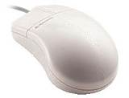

| Мышь (mouse) — манипуляторное устройство ввода информации. |  |
|
|
|
| В корпусе мыши размещена печатная плата (1), на которой находятся микропроцессор (2) и механизм манипулятора (3). | Манипулятор состоит из тяжелого резинового шарика (1); прижимного ролика (2); двух дисков с прорезями (3), и роликов (4), закрепленных на осях X и Y; оптических пар светодиод (5) – фотоприемник (6). |
При перемешении мыши по поверхности резиновый шарик начинает вращаться. Его вращение через контактирующие с его поверхностью ролики передается на диски с прорезями. Фотоэлементы оптопар, размещенных по обе стороны оси вращения, регистрируют периодические световые импульсы. Порядок, с которым освещаются фотоэлементы, определяет направление перемещения мыши, а частота импульсов — скорость.
Подключение
мыши к компьютеру выполняется двумя способами: через порт COM1 (9-контактный
разъем) или через порт PS/2 (6-контактный круглый разъем 6miniDIN).
Работа
мыши поддерживается поддерживается специальной программой-драйвером.